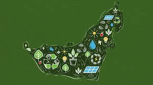

The announcement was made at the World Government Summit 2025, taking place in Dubai from February 11 to 13

UAE has launched the first phase of Blue Visa system for sustainability innovators.
The UAEs Ministry of Climate Change and Environment, along with the Federal Authority for Identity, Citizenship, Customs, and Ports Security (ICP), announced the launch of the visa system in the country.
What is the Blue Visa?
The Blue Visa is a 10-year residence visa designed for individuals who have made exceptional contributions to environmental protection and sustainability, both within the UAE and globally.
This visa is intended for:
1.Supporters of environmental action
2.Members of international organizations and companies
3.Members of associations and non-governmental organisations
4.Global award winners Distinguished activists and researchers in environmental work
How to apply for the Blue Visa in UAE
Environmental experts, nature advocates, and eco-conscious individuals can apply for the Blue Visa directly through the Federal Authority for Identity, Citizenship, Customs, and Ports Security or through nomination by competent authorities in the UAE.
Why has the UAE introduced the Blue Visa?
The Blue Visa was introduced to enhance and further the UAEs sustainability efforts. It extends the Golden and Green Residencies, which were launched earlier.
The UAE has committed to strengthening its position as a global leader in sustainability through innovative initiatives and projects.
The Blue Visa reflects the UAEs wise leaderships vision to attract leading thinkers, innovators, and individuals with exceptional achievements in climate change and sustainability, both domestically and internationally, emphasized Dr Amna Bint Abdullah Al Dahak, Minister of Climate Change and Environment.
Dr Amna also pointed out that this initiative aims to leverage the contributions of sustainability advocates to achieve ambitious national goals and build a sustainable future for the people of the UAE and the world.
health and sustainability define UAE food trends
Trends like eco-friendly sourcing & plant-based diets redefine country's food scene
The UAEs multicultural demography, along with a steady flow of tourists, is reshaping the countrys food and beverage sector. With diverse cultural influences redefining the market, there is a growing demand for innovative dining experiences and international cuisines.
As consumer preferences evolve, the industry is responding by embracing trends like healthy, plant-based options, unique ingredients, digital ordering, and sustainability to stay competitive.
Healthy eating, with an emphasis on freshly prepared, balanced, and nutrient-dense meals, has become a top priority in todays wellness-focused world.
“Health-conscious preferences are shaping the market, leading to heightened demand for nutritious options across all categories,” says Monique Naval, Senior Research Analyst at data analytics company Euromonitor International.